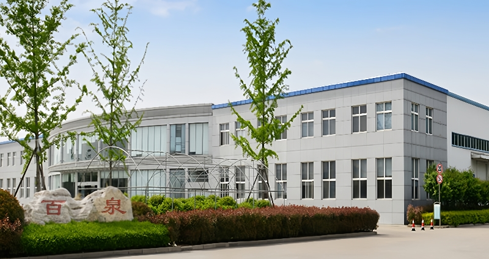
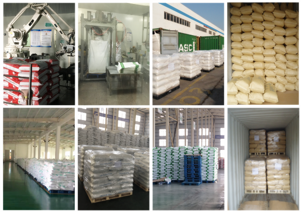

江蘇省
Bespringの故郷の州と顧客の調整、生産リソース、東シナの輸出インフラへのアクセスのための重要な拠点。
生産ネットワーク
中国の4省にまたがる協力生産拠点が、食品、飼料および工業分野のお客様に向け、柔軟な調達、連携した品質管理および輸出供給を支えています。

ネットワーク概要
ばねの化学薬品は江蘇、山東、四川および海南、中国の協同の生産の基盤と働きます。
このマルチレギュレーション構造により、当社の輸出チームは、製品カテゴリ、グレード、仕様、注文要件を適切な生産リソースと整列することができます。また、顧客が単一の施設よりも広範なポートフォリオを必要とするときに柔軟性を追加します。
Bespringは、国際バイヤーと選択した生産パートナー間の通信を調整します。, 仕様レビューをカバー, 利用可能なドキュメント, 包装要件と出荷計画.
4つの生産地域
ネットワークは東の製造業を接続し、西および南シナの生産資源が付いている通路を輸出します。
ビースプリング供給のコーディネート 江蘇省協同組合の基盤 シャンドン協同組合の基盤 シチュアン協同組合の基盤 ハイナン協同組合の基盤
Bespringの故郷の州と顧客の調整、生産リソース、東シナの輸出インフラへのアクセスのための重要な拠点。
中国の主要な化学品製造・港湾物流集積地の一つと連携する、協力生産拠点の地域です。
ネットワークの地理的到達範囲を広げ、インランド製造リソースへのアクセスを可能にする協力的な生産地域。
中国南部に位置する協力生産地域で、広域供給ネットワークの柔軟性をさらに高めています。
製品の供給可否と適切な生産供給元は、グレード、仕様、数量および仕向地市場に応じて個別に確認します。
出荷までの生産
製造は、信頼できる国際供給を支える一要素です。試験、保管、包装および出荷を、それぞれの注文に合わせて調整します。
生産リソースは、必要な製品、グレード、仕様、注文プロファイルに応じて選択されます。
テストおよび指定の検討は解放およびディスパッチの前にプロダクト適合を確かめるのを助けます。
保護された貯蔵、バッチ同一証明および有効な外出処理のためにプロダクトが組織されます。
包装、ローディングおよび郵送物の細部は顧客の発注および宛先のために調整されます。


品質フレームワーク
品質要件は、製品、アプリケーション、目的地の市場によって異なります。当社の役割は、これらの要件を明確に確立し、生産および輸出準備を通じてそれらを目に見えるようにすることです。
商品名、グレード、仕様、アプリケーション、パッケージ、目的地を確認します。
協力ネットワーク内の適切なリソースで問い合わせを一致させます。
利用可能なテスト結果と製品に関するドキュメントを合意された要件にレビューします。
梱包、バッチ情報、文書、出荷の手配を事前に確認します。

継続的な改善
Bespringは、プロセス制御を強化し、作業効率を向上させるために、生産パートナーを奨励します。 継続的な注意の領域は次のとおりです。
バイヤーの質問
Bespringを調達パートナーとして評価する調達および品質チームに有用な回答。
私達は江蘇、山東、四川および海南、中国で協力的な生産の基盤を働かせます。
Bespringは、協力的な生産ネットワークを通じて運営しています。当社のチームは、製品要件、品質文書、および選択した生産パートナーとの輸出供給を調整しています。
ネットワークは、食品、動物栄養、水処理、産業洗浄、採掘および農業用途のリン酸塩および選択した成分および化学物質をサポートしています。
品質管理は、原料審査、生産管理、製品試験、仕様確認、および輸出出荷前の文書確認を対象とします。
自信のあるソース
製品、グレード、仕様、数量、目的地を共有し、当社のチームは適切な供給ルートを評価することができます。